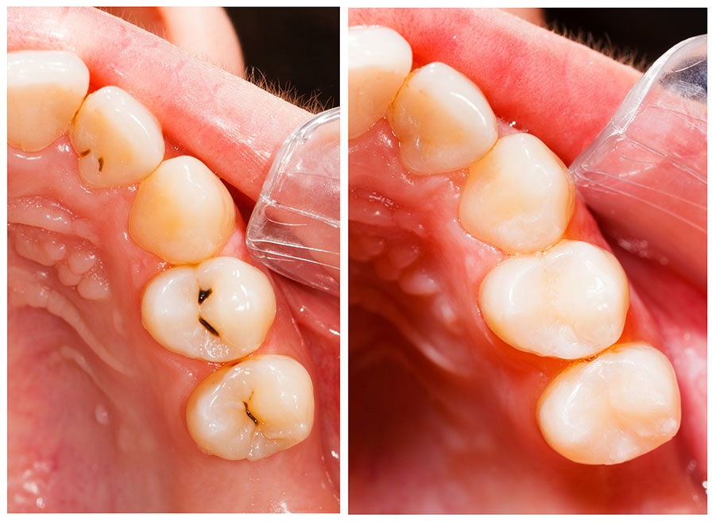
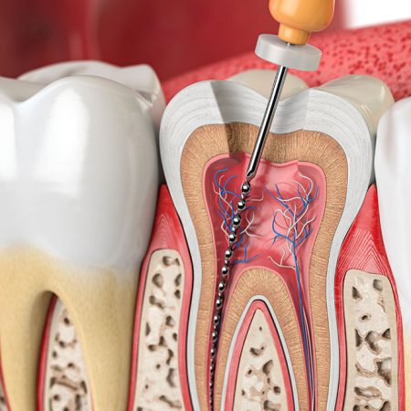

Odontologie conservatrice & endodontie
Préserver vos dents naturelles grâce à des soins restaurateurs modernes et des traitements de canal réalisés avec précision et technologies de pointe.

Odontologie conservatrice
L'odontologie conservatrice a pour objectif de préserver au maximum les dents naturelles en traitant les atteintes précoces et en restaurant les structures dentaires endommagées. Elle constitue un pilier essentiel de la dentisterie moderne, axé sur des soins préventifs et des techniques peu invasives.
-
Traitement des caries
Prise en charge des caries à tous les stades, avec des techniques mini-invasives pour conserver un maximum de tissu dentaire sain.
-
Restaurations en composite
Utilisation de matériaux esthétiques de dernière génération pour reconstruire les dents abîmées ou fracturées de manière durable et naturelle.
-
Esthétique & fonctionnalité
Des restaurations qui respectent l'apparence naturelle de la dent tout en restituant une fonction masticatoire optimale.

Endodontie (traitement de canal)
L'endodontie est la spécialité dédiée au traitement de l'intérieur de la dent, lorsque la pulpe dentaire est atteinte par une infection ou une inflammation profonde. Ce traitement, communément appelé traitement de canal, permet de conserver une dent qui, autrement, devrait être extraite.
-
Traitement de canal précis
Réalisé avec des techniques modernes et des équipements de haute précision garantissant une désinfection efficace et une obturation hermétique des canaux.
-
Élimination de la douleur & de l'infection
Objectif principal : supprimer la douleur, stopper l'infection et préserver la dent sur le long terme en évitant l'extraction.
-
Conservation de la dent naturelle
Préserver la dent traitée grâce à une restauration adaptée (composite ou couronne) pour lui redonner toute sa solidité et sa fonction.